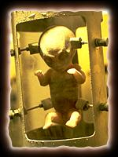
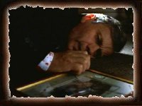
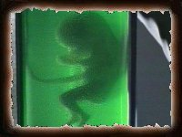
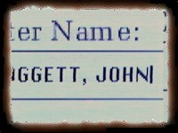
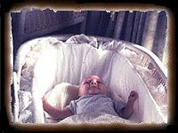
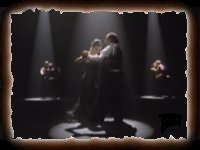

Hey! Does this thing go to 11? How are you all doing!
2018-01-03 added: transcript for Babylon
Choose the Season that you want to explore further:
[ Season One ]
[ Season Two ]
[ Season Three ]
[ Season Four ]
[ Season Five ]
[ Season Six ]
[ Season Seven ]
[ Season Eight ]
[ Season Nine ]
[ Season Ten ]
[ Season Eleven ]
[ The Lone Gunmen ]
|
Please Note: |
|
Episodes marked with an asterisk (*) are considered mythology/conspiracy (mytharc) shows and deal with
colonisation, alien invasion, black oil, abduction scenarios etc. Non-asterisked episodes are Monster of the
Week (MOTW) shows.)
Episodes are listed in production code order, which is not necessarily the order in which they aired. Dates are in YYYY/MM/DD format. |
| Title | Episode | Air Date | ||||
|---|---|---|---|---|---|---|
| PILOT * | 1X79 | 1993/09/10 | ||||
| DEEP THROAT * | 1X01 | 1993/09/17 | ||||
| SQUEEZE | 1X02 | 1993/09/24 | ||||
| CONDUIT * | 1X03 | 1993/10/01 | ||||
| THE JERSEY DEVIL | 1X04 | 1993/10/08 | ||||
| SHADOWS | 1X05 | 1993/10/22 | ||||
| GHOST IN THE MACHINE | 1X06 | 1993/10/29 | ||||
| ICE | 1X07 | 1993/11/05 | ||||
| SPACE | 1X08 | 1993/11/12 | ||||
| FALLEN ANGEL * | 1X09 | 1993/11/19 | ||||
| EVE | 1X10 | 1993/12/10 | ||||
| FIRE | 1X11 | 1993/12/17 | ||||
| BEYOND THE SEA | 1X12 | 1994/01/07 | ||||
| GENDERBENDER | 1X13 | 1994/01/21 |  | |||
| LAZARUS | 1X14 | 1994/02/04 | ||||
| YOUNG AT HEART | 1X15 | 1994/02/11 | ||||
| E.B.E. * | 1X16 | 1994/02/18 | ||||
| MIRACLE MAN | 1X17 | 1994/03/18 | ||||
| SHAPES | 1X18 | 1994/04/01 | ||||
| DARKNESS FALLS | 1X19 | 1994/04/15 | ||||
| TOOMS | 1X20 | 1994/04/22 | ||||
| BORN AGAIN | 1X21 | 1994/04/29 | ||||
| ROLAND | 1X22 | 1994/05/06 | ||||
| THE ERLENMEYER FLASK * | 1X23 | 1994/05/13 |
| Title | Episode | Air Date | ||||
|---|---|---|---|---|---|---|
| LITTLE GREEN MEN * | 2X01 | 1994/09/16 | ||||
| THE HOST | 2X02 | 1994/09/23 | ||||
| BLOOD | 2X03 | 1994/09/30 | ||||
| SLEEPLESS * | 2X04 | 1994/10/07 | ||||
| DUANE BARRY * | 2X05 | 1994/10/14 | ||||
| ASCENSION * | 2X06 | 1994/10/21 | ||||
| 3 | 2X07 | 1994/11/04 | ||||
| ONE BREATH * | 2X08 | 1994/11/11 | ||||
| FIREWALKER | 2X09 | 1994/11/18 | ||||
| RED MUSEUM * | 2X10 | 1994/12/09 | ||||
| EXCELSIUS DEI | 2X11 | 1994/12/16 | ||||
| AUBREY | 2X12 | 1995/01/06 | ||||
| IRRESISTIBLE | 2X13 | 1995/01/13 | ||||
| DIE HAND DIE VERLETZT | 2X14 | 1995/01/27 | ||||
| FRESH BONES | 2X15 | 1995/02/03 | ||||
| COLONY * | 2X16 | 1995/02/10 | ||||
| END GAME * | 2X17 | 1995/02/17 | ||||
| FEARFUL SYMMETRY | 2X18 | 1995/02/24 | ||||
| DOD KALM | 2X19 | 1995/03/10 | ||||
| HUMBUG | 2X20 | 1995/03/31 | ||||
| THE CALUSARI | 2X21 | 1995/04/14 | ||||
| F. EMASCULATA | 2X22 | 1995/04/28 | ||||
| SOFT LIGHT | 2X23 | 1995/05/05 | ||||
| OUR TOWN | 2X24 | 1995/05/12 | ||||
| ANASAZI * | 2X25 | 1995/05/19 |
| Title | Episode | Air Date |  |
|||
|---|---|---|---|---|---|---|
| THE BLESSING WAY * | 3X01 | 1995/09/22 | ||||
| PAPER CLIP * | 3X02 | 1995/09/29 | ||||
| D.P.O. | 3X03 | 1995/10/06 | ||||
| CLYDE BRUCKMAN'S FINAL REPOSE | 3X04 | 1995/10/13 | ||||
| THE LIST | 3X05 | 1995/10/20 | ||||
| 2SHY | 3X06 | 1995/11/03 | ||||
| THE WALK | 3X07 | 1995/11/10 | ||||
| OUBLIETTE | 3X08 | 1995/11/17 | ||||
| NISEI * | 3X09 | 1995/11/24 | ||||
| 731 * | 3X10 | 1995/12/01 | ||||
| REVELATIONS | 3X11 | 1995/12/15 | ||||
| WAR OF THE COPROPHAGES | 3X12 | 1996/01/05 | ||||
| SYZYGY | 3X13 | 1996/01/26 | ||||
| GROTESQUE | 3X14 | 1996/02/02 | ||||
| PIPER MARU * | 3X15 | 1996/02/09 | ||||
| APOCRYPHA * | 3X16 | 1996/02/16 | ||||
| PUSHER | 3X17 | 1996/02/23 | ||||
| TESO DOS BICHOS | 3X18 | 1996/03/08 | ||||
| HELL MONEY | 3X19 | 1996/03/29 | ||||
| JOSE CHUNG'S 'FROM OUTER SPACE' | 3X20 | 1996/04/12 | ||||
| AVATAR | 3X21 | 1996/04/26 | ||||
| QUAGMIRE | 3X22 | 1996/05/03 | ||||
| WETWIRED * | 3X23 | 1996/05/10 | ||||
| TALITHA CUMI * | 3X24 | 1996/05/17 |
| Title | Episode | Air Date | ||||
|---|---|---|---|---|---|---|
| HERRENVOLK * | 4X01 | 1996/10/04 | ||||
| UNRUHE | 4X02 | 1996/10/27 | ||||
| HOME | 4X03 | 1996/10/11 | ||||
| TELIKO | 4X04 | 1996/10/18 | ||||
| THE FIELD WHERE I DIED | 4X05 | 1996/11/03 | ||||
| SANGUINARIUM | 4X06 | 1996/11/10 | ||||
| MUSINGS OF A CIGARETTE SMOKING MAN * | 4X07 | 1996/11/17 | ||||
| PAPER HEARTS | 4X08 | 1996/12/15 | ||||
| TUNGUSKA * | 4X09 | 1996/11/24 | ||||
| TERMA * | 4X10 | 1996/12/01 | ||||
| El MUNDO GIRA | 4X11 | 1997/01/12 | ||||
| KADDISH | 4X12 | 1997/02/16 | ||||
| NEVER AGAIN | 4X13 | 1997/02/02 | ||||
| LEONARD BETTS * | 4X14 | 1997/01/26 | ||||
| MEMENTO MORI * | 4X15 | 1997/02/09 | ||||
| UNREQUITED | 4X16 | 1997/02/23 | ||||
| TEMPUS FUGIT * | 4X17 | 1997/03/16 | ||||
| MAX * | 4X18 | 1997/03/23 | ||||
| SYNCHRONY | 4X19 | 1997/04/13 | ||||
| SMALL POTATOES | 4X20 | 1997/04/20 | ||||
| ZERO SUM * | 4X21 | 1997/04/27 | ||||
| ELEGY | 4X22 | 1997/05/04 | ||||
| DEMONS * | 4X23 | 1997/05/11 | ||||
| GETHSEMANE * | 4X24 | 1997/05/18 |
| Title | Episode | Air Date | ||||
|---|---|---|---|---|---|---|
| UNUSUAL SUSPECTS * | 5X01 | 1997/11/16 | ||||
| REDUX * | 5X02 | 1997/11/02 | ||||
| REDUX II * | 5X03 | 1997/11/09 | ||||
| DETOUR | 5X04 | 1997/11/23 | ||||
| CHRISTMAS CAROL * | 5X05 | 1997/12/07 | ||||
| POST-MODERN PROMETHEUS | 5X06 | 1997/11/30 | ||||
| EMILY * | 5X07 | 1997/12/14 | ||||
| KITSUNEGARI | 5X08 | 1998/01/04 | ||||
| SCHIZOGENY | 5X09 | 1998/01/11 | ||||
| CHINGA | 5X10 | 1998/02/08 | ||||
| KILL SWITCH | 5X11 | 1998/02/15 |  |  | ||
| BAD BLOOD | 5X12 | 1998/02/22 | ||||
| PATIENT X * | 5X13 | 1998/03/01 | ||||
| THE RED AND THE BLACK * | 5X14 | 1998/03/08 | ||||
| TRAVELERS * | 5X15 | 1998/03/29 | ||||
| MIND'S EYE | 5X16 | 1998/04/19 | ||||
| ALL SOULS | 5X17 | 1998/04/26 | ||||
| THE PINE BLUFF VARIANT | 5X18 | 1998/05/03 | ||||
| FOLIE A DEUX | 5X19 | 1998/05/10 | ||||
| THE END * | 5X20 | 1998/05/17 |
| Title | Episode | Air Date | |
|---|---|---|---|
| THE X FILES: FIGHT THE FUTURE * | FTF | 1998/06/19 | |
| THE X FILES: FIGHT THE FUTURE - DVD COMMENTARY* | FTF | 1998/06/19 | |
| THE SIMPSONS: THE SPRINGFIELD FILES | 3G01 | 1997/01/12 |
| Title | Episode | Air Date | ||||
|---|---|---|---|---|---|---|
| THE BEGINNING * | 6X01 | 1998/11/08 | ||||
| DRIVE | 6X02 | 1998/11/15 | ||||
| TRIANGLE | 6X03 | 1998/11/22 | ||||
| DREAMLAND * | 6X04 | 1998/11/29 | ||||
| DREAMLAND II * | 6X05 | 1998/12/06 | ||||
| TERMS OF ENDEARMENT | 6X06 | 1999/01/03 | ||||
| RAIN KING | 6X07 | 1999/01/10 | ||||
| HOW THE GHOSTS STOLE CHRISTMAS | 6X08 | 1998/12/13 | ||||
| TITHONUS | 6X09 | 1999/01/24 | ||||
| SR 819 * | 6X10 | 1999/01/17 | ||||
| TWO FATHERS * | 6X11 | 1999/02/07 | ||||
| ONE SON * | 6X12 | 1999/02/14 | ||||
| ARCADIA | 6X13 | 1999/03/07 | ||||
| AGUA MALA | 6X14 | 1999/02/21 | ||||
| MONDAY | 6X15 | 1999/02/28 | ||||
| ALPHA | 6X16 | 1999/03/28 | ||||
| TREVOR | 6X17 | 1999/04/11 | ||||
| MILAGRO | 6X18 | 1999/04/18 | ||||
| THREE OF A KIND * | 6X19 | 1999/05/02 | ||||
| THE UNNATURAL * | 6X20 | 1999/04/25 | ||||
| FIELD TRIP | 6X21 | 1999/05/09 | ||||
| BIOGENESIS * | 6X22 | 1999/05/16 |
| Title | Episode | Air Date | ||||
|---|---|---|---|---|---|---|
| HUNGRY | 7ABX01 | 1999/11/21 | ||||
| THE GOLDBERG VARIATION | 7ABX02 | 1999/12/12 | ||||
| THE SIXTH EXTINCTION * | 7ABX03 | 1999/11/07 | ||||
| THE SIXTH EXTINCTION II: AMOR FATI * | 7ABX04 | 1999/11/14 | ||||
| MILLENNIUM | 7ABX05 | 1999/11/28 | ||||
| RUSH | 7ABX06 | 1999/12/05 | ||||
| ORISON | 7ABX07 | 1999/01/09 | ||||
| THE AMAZING MALEENI | 7ABX08 | 2000/01/16 | ||||
| SIGNS AND WONDERS | 7ABX09 | 2000/01/23 | ||||
| SEIN UND ZEIT * | 7ABX10 | 2000/02/06 | ||||
| CLOSURE * | 7ABX11 | 2000/02/13 | ||||
| X-COPS | 7ABX12 | 2000/02/20 |  |
|||
| FIRST PERSON SHOOTER | 7ABX13 | 2000/02/27 | ||||
| THEEF | 7ABX14 | 2000/03/12 | ||||
| EN AMI * | 7ABX15 | 2000/03/19 | ||||
| CHIMERA | 7ABX16 | 2000/04/02 | ||||
| all things | 7ABX17 | 2000/04/09 | ||||
| HOLLYWOOD A.D. | 7ABX18 | 2000/04/30 | ||||
| BRAND X | 7ABX19 | 2000/04/16 | ||||
| FIGHT CLUB | 7ABX20 | 2000/05/07 | ||||
| JE SOUHAITE | 7ABX21 | 2000/05/14 | ||||
| REQUIEM * | 7ABX22 | 2000/05/21 |
| Title | Episode | Air Date |  | |||
|---|---|---|---|---|---|---|
| WITHIN * | 8ABX01 | 2000/11/05 | ||||
| WITHOUT * | 8ABX02 | 2000/11/12 | ||||
| REDRUM | 8ABX03 | 2000/12/10 | ||||
| PATIENCE | 8ABX04 | 2000/11/19 | ||||
| ROADRUNNERS | 8ABX05 | 2000/11/26 | ||||
| INVOCATION | 8ABX06 | 2000/12/03 | ||||
| VIA NEGATIVA | 8ABX07 | 2000/12/17 | ||||
| PER MANUM * | 8ABX08 | 2001/02/18 | ||||
| SUREKILL | 8ABX09 | 2001/01/07 | ||||
| SALVAGE | 8ABX10 | 2001/01/14 | ||||
| THE GIFT * | 8ABX11 | 2001/02/04 | ||||
| BADLAA | 8ABX12 | 2001/01/21 |  |
|||
| MEDUSA | 8ABX13 | 2001/02/11 | ||||
| THIS IS NOT HAPPENING * | 8ABX14 | 2001/02/25 | ||||
| DEADALIVE * | 8ABX15 | 2001/04/01 | ||||
| VIENEN * | 8ABX16 | 2001/04/29 | ||||
| EMPEDOCLES | 8ABX17 | 2001/04/22 | ||||
| THREE WORDS * | 8ABX18 | 2001/04/08 | ||||
| ALONE * | 8ABX19 | 2001/05/06 | ||||
| ESSENCE * | 8ABX20 | 2001/05/13 | ||||
| EXISTENCE * | 8ABX21 | 2001/05/20 |
| Title | Episode | Air Date |  | |||
|---|---|---|---|---|---|---|
| NOTHING IMPORTANT HAPPENED TODAY * | 9ABX01 | 2001/11/11 | ||||
| NOTHING IMPORTANT HAPPENED TODAY II * | 9ABX02 | 2001/11/18 | ||||
| DÆMONICUS | 9ABX03 | 2001/12/02 | ||||
| HELLBOUND | 9ABX04 | 2002/01/27 | ||||
| 4-D | 9ABX05 | 2001/12/09 | ||||
| LORD OF THE FLIES | 9ABX06 | 2001/12/16 | ||||
| JOHN DOE | 9ABX07 | 2002/01/13 | ||||
| TRUST NO 1 * | 9ABX08 | 2002/01/06 | ||||
| UNDERNEATH | 9ABX09 | 2002/03/31 | ||||
| PROVENANCE * | 9ABX10 | 2002/03/03 | ||||
| PROVIDENCE * | 9ABX11 | 2002/03/10 | ||||
| SCARY MONSTERS | 9ABX12 | 2002/04/14 | ||||
| AUDREY PAULEY | 9ABX13 | 2002/03/17 | ||||
| IMPROBABLE | 9ABX14 | 2002/04/07 | ||||
| JUMP THE SHARK * | 9ABX15 | 2002/04/21 | ||||
| RELEASE | 9ABX16 | 2002/05/05 | ||||
| WILLIAM * | 9ABX17 | 2002/04/28 | ||||
| SUNSHINE DAYS | 9ABX18 | 2002/05/12 | ||||
| THE TRUTH I * | 9ABX19 | 2002/05/19 | ||||
| THE TRUTH II * | 9ABX20 | 2002/05/19 |
| Title | Episode | Air Date | |
|---|---|---|---|
| THE X FILES: I WANT TO BELIEVE | IWTB | 2008/07/25 |
| Title | Episode | Air Date | ||||
|---|---|---|---|---|---|---|
| MY STRUGGLE * | 1AYW01 | 2016/01/24 | ||||
| HOME AGAIN | 1AYW02 | 2016/02/08 | ||||
| MULDER & SCULLY MEET THE WERE-MONSTER | 1AYW03 | 2016/02/01 | ||||
| BABYLON | 1AYW04 | 2016/02/15 | ||||
| FOUNDER'S MUTATION | 1AYW05 | 2016/01/25 | ||||
| MY STRUGGLE II * | 1AYW06 | 2016/02/22 |
| Title | Episode | Air Date | ||||
|---|---|---|---|---|---|---|
| MY STRUGGLE III * | TBA | 2018/01/03 | ||||
| THIS | TBA | 2018/01/10 | ||||
| PLUS ONE | TBA | 2018/01/17 | ||||
| THE LOST ART OF FOREHEAD SWEAT | TBA | 2018/01/24 | ||||
| GHOULI | TBA | 2018/01/31 |
| Title | Episode | Air Date |  | |||
|---|---|---|---|---|---|---|
| PILOT | 1AEB79 | 2001/03/04 | ||||
| BOND, JIMMY BOND | 1AEB01 | 2001/03/11 | ||||
| EINE KLEINE FROHIKE | 1AEB02 | 2001/03/16 | ||||
| LIKE WATER FOR OCTANE | 1AEB03 | 2001/03/18 | ||||
| THREE MEN AND A SMOKING DIAPER | 1AEB04 | 2001/03/23 | ||||
| PLANET OF THE FROHIKES | 1AEB05 | 2001/04/06 | ||||
| MADAM, I'M ADAM | 1AEB06 | 2001/03/30 | ||||
| MAXIMUM BYERS | 1AEB07 | 2001/04/13 | ||||
| DIAGNOSIS: JIMMY | 1AEB08 | 2001/04/20 | ||||
| THE LYING GAME | 1AEB09 | 2001/05/04 | ||||
| TANGO DE LOS PISTOLEROS | 1AEB10 | 2001/04/27 | ||||
| THE CAP'N TOBY SHOW | 1AEB11 | 2001/06/01 | ||||
| ALL ABOUT YVES | 1AEB12 | 2001/05/11 |
Please let me know if you have any extra information or find any mistakes or broken links...
... and please let me know what you think of the site!
1. Legal Notice
"The X-Files" ® and © (copyright) 1013 Productions, Fox and related entities. All
rights reserved. Any reproduction, duplication or distribution of these materials in any form is expressly prohibited.
2. Site Disclaimer
This web site, its operators and any content on this site relating to "The
X Files" are not authorized by Fox. The characters, plotlines, quotes, images etc.
included here are owned by Chris Carter and 1013 Productions, all rights reserved.
The transcripts contained on this site are in no way a substitute for the show "The X-Files" and
are merely meant as a homage and as a service to fans who may have missed episodes during the
eleven seasons of the show. You can catch repeats of The X-Files on TV around the world - please check your TV schedules.
DVDs of all fully-aired series are also available for your viewing pleasure.
Actual shooting scripts are available from several online scriptshops. This site contains only transcripts
derived from watching the actual TV shows.
These transcripts are not authorized or endorsed by Chris Carter, 1013 Productions, or Fox Entertainment.
The only gain I make from this site is the knowledge that these transcripts
can be enjoyed the world over by millions of X-Philes like yourselves. These transcripts
MUST NOT be sold for any monetary gain whatsoever. They are provided here by dedicated fans solely
for continued enjoyment of the series.
No copyright infringements are intended on this site. Chris Carter, 1013 Productions and 20th Century Fox
remain the owners of all material on this site.
This website makes use of Google Analytics and Extreme Tracking to provide information on the popularity
of available transcripts and to monitor for problems with the site.
3. Thanks
I would like to thank the many transcribers who, over all these years, have worked tirelessly to produce these
transcripts for your enjoyment. I'd also like to thank the many visitors to the site who have been kind enough to write
with their thoughts on the show over the years.
© DrWeesh (1997-2018)

Hosted in the UK by OpusVL, suppliers of advanced Linux web-hosting and custom solutions